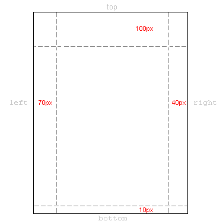

Lição 10: Margin e padding
Na lição anterior vimos o box model. Nesta lição veremos como controlar a apresentação de um elemento definindo as propriedades margin e padding.
Definindo margin de um elemento
Um elemento tem quatro lados: right, left, top e bottom (direito, esquerdo, superior e inferior). A margin é a distância entre os lados de elementos vizinhos (ou às bordas do documento). Ver o diagrama mostrado na lição 9.
Vamos começar com um exemplo mostrando como definir margins para o documento, ou seja, para o elemento <body>. A ilustração a seguir mostra como serão as margens da página.

As CSS são mostradas abaixo:
body {
margin-top: 100px;
margin-right: 40px;
margin-bottom: 10px;
margin-left: 70px;
}
Ou, adotando uma sintaxe mais elegante:
body {
margin: 100px 40px 10px 70px;
}
As margens para a maioria dos elementos pode ser definida conforme o exemplo acima. Podemos então, por exemplo, definir margens para todos os parágrafos <p>:
body {
margin: 100px 40px 10px 70px;
}
p {
margin: 5px 50px 5px 50px;
}
Definindo padding de um elemento
Padding pode também ser entendido como "enchimento". Isto faz sentido, porque padding não é computado na distância entre elementos, padding define simplesmente a distância entre a borda e o conteúdo do elemento.
Ilustramos o uso de padding através de um exemplo onde todos os cabeçalhos têm uma cor de fundo definida:
h1 {
background: yellow;
}
h2 {
background: orange;
}
Definindo padding para os cabeçalhos, alteramos a quantidade de enchimento existente ao redor de cada um deles:
h1 {
background: yellow;
padding: 20px 20px 20px 80px;
}
h2 {
background: orange;
padding-left:120px;
}
Sumário
Você está no caminho para se tornar um mestre em CSS box model. Na próxima lição veremos com detalhes como atribuir bordas coloridas e formas aos elementos.